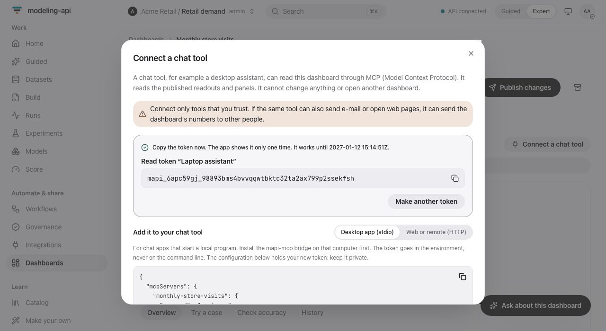

A chat tool, for example a desktop assistant, an IDE or an agent that you write, can read a dashboard through MCP (Model Context Protocol). The tool gets the same 14 read-only dashboard tools that the dashboard chat uses. It can read the published readouts, panels, channels, metrics, accuracy and the what-if grid. It cannot change anything, run a model or open a different dashboard.
The tool uses its own model. The platform sends nothing to a model for MCP and the daily chat limits do not apply.
Connect only tools that you trust
The tool reads the numbers of the dashboard. If the same tool can also send e-mail, open web pages, write files or call other services, a mistake of its model, or text in the dashboard that tries to give it instructions, can send these numbers to other persons. Give the tool only the other tools that it needs. Do not connect a client's dashboard to an agent that can act without your approval.
Before you start¶
You need one of these credentials. Each credential is for one dashboard:
| Credential | Who gets it | How the tool sends it |
|---|---|---|
A read token (mapi_…) |
A team member or a client user with access to the dashboard | Authorization: Bearer mapi_… |
| A share link and its passcode | A person who received the link | The tool exchanges them for a share session (X-Mapi-Share: mps_…) |
The dashboard must be published with the panels layout (layout 2). A dashboard that uses
uploaded code refuses all read tokens and share links (403 UPLOADED_CODE_NOT_SHAREABLE),
also the tokens of team members (Upload your own code). The app does
not make a token for such a dashboard: Make token says why (uploaded code, layout 1, or
not published now).
Make a read token¶
- Open the dashboard: in the app, or in the client portal.
- Select Connect a chat tool.
- Under Make a read token, type a name, for example the name of the tool. Select how long the token works in Ends after (a maximum of 90 days).
- Select Make token.
- Select Copy read token. The app shows the token one time only. If you lose it, revoke it and make a new one.
- Under Add it to your chat tool, select Desktop app (stdio) or Web or remote (HTTP), then Copy configuration. The configuration contains the new token.

The rules of a read token:
- It can read one dashboard, and only through MCP. All other API routes refuse it
(
403 FORBIDDEN). It cannot use the chat of the app. - It sees the published readouts only, also when a team member made it. It never sees private readouts.
- It acts as you. If you lose access to the dashboard, or the dashboard is unpublished, the token stops at the next request. It works again when the access comes back, so revoke a token that you do not use. You can revoke your own tokens also after you lost access.
- You can have 5 active tokens for each dashboard. Make one token for each tool.
- Only a web sign-in can make a token. A token cannot make a different token.
Add the tool¶
Desktop app (stdio)¶
Desktop apps start a local program and talk to it through its standard input and output.
The program is mapi-mcp, the MCP bridge of the platform. It sends each message to the API
with your credential.
- Install
mapi-mcpon the computer of the chat tool. In a checkout of the platform,make installputs it into.venv/bin. On a different computer, install thepackages/specandpackages/mcppackages of the same release, for examplepip install ./packages/spec ./packages/mcp. - Add the configuration to the chat tool. Many desktop apps read this shape:
{
"mcpServers": {
"weekly-sales": {
"command": "mapi-mcp",
"env": {
"MAPI_API_URL": "https://api.example.com",
"MAPI_DASHBOARD_TOKEN": "<your read token>"
}
}
}
}
- Start the chat tool again. Ask it, for example: "Use the dashboard tools. What does the latest readout show?"
Some desktop apps do not use the PATH of your shell. If the app cannot find mapi-mcp,
type the full path of the program in command.
The bridge reads its credential from its environment, never from its command line. It refuses arguments, because a command line can show in a list of processes or in a shell history. These are the variables:
| Variable | Value |
|---|---|
MAPI_API_URL |
The address of the API, for example https://api.example.com. Use https:// (http:// works for localhost only) |
MAPI_DASHBOARD_TOKEN |
A read token |
MAPI_SHARE_LINK and MAPI_SHARE_PASSCODE |
A share link (or only its mpd_… token) and its passcode, in place of a read token |
MAPI_MCP_CONFIG |
Optional: a different path for the configuration file |
MAPI_MCP_LOG |
Optional: INFO writes one line for each request to the standard error |
You can also put the same values in the file ~/.config/mapi/mcp.json, with the keys
api_url, dashboard_token, share_link and share_passcode. The file contains a secret.
Thus only you can read it (chmod 600 ~/.config/mapi/mcp.json), or the bridge does not
start.
The bridge writes only MCP messages to its standard output. Its log goes to the standard error, and it removes tokens, share links, sessions and passcodes from each line.
Web or remote (HTTP)¶
Tools that connect to a URL use the MCP endpoint of the API directly:
{
"mcpServers": {
"weekly-sales": {
"type": "http",
"url": "https://api.example.com/v1/mcp",
"headers": {"Authorization": "Bearer <your read token>"}
}
}
}
Put the token in the Authorization header, never in the URL. The endpoint refuses a
token in the query string (?token=, 401).
The endpoint is POST /v1/mcp (streamable HTTP, JSON answers, no sessions). Each request
sends one JSON-RPC 2.0 message. This Python example does a full session: initialize,
tools/list and one tools/call:
PROTOCOL = "2025-11-25"
async def rpc(http: httpx.AsyncClient, rid: int, method: str, **params: Any) -> Any:
"""Send one JSON-RPC request to POST /v1/mcp and return its result."""
r = await http.post(
"/v1/mcp",
json={"jsonrpc": "2.0", "id": rid, "method": method, "params": params},
headers={"MCP-Protocol-Version": PROTOCOL},
)
r.raise_for_status() # 401: the token is not valid; 404: no access to the dashboard
answer = r.json()
if "error" in answer:
raise RuntimeError(answer["error"]["message"])
return answer["result"]
async def session(http: httpx.AsyncClient) -> dict[str, Any]:
"""Initialize, list the tools and read the latest readout of the token's dashboard."""
hello = await rpc(http, 1, "initialize", protocolVersion=PROTOCOL, capabilities={},
clientInfo={"name": "docs-example", "version": "1.0"}) # fmt: skip
print(hello["serverInfo"]["name"], hello["protocolVersion"]) # mapi-dashboards 2025-11-25
# tell the server that the client is ready (a notification: 202, no body)
await http.post("/v1/mcp", json={"jsonrpc": "2.0", "method": "notifications/initialized"},
headers={"MCP-Protocol-Version": PROTOCOL}) # fmt: skip
tools = await rpc(http, 2, "tools/list")
print(len(tools["tools"]), tools["tools"][0]["name"]) # 14 get_dashboard
called = await rpc(http, 3, "tools/call", name="get_latest_readout", arguments={})
if called["isError"]: # a tool error is a result, not a JSON-RPC error
raise RuntimeError(called["content"][0]["text"])
readout: dict[str, Any] = json.loads(called["content"][0]["text"])
print(readout["seq"], readout["title"])
return readout
def client(api_url: str, read_token: str) -> httpx.AsyncClient:
"""The token goes in the Authorization header, never in the URL."""
headers = {
"Authorization": f"Bearer {read_token}",
"Accept": "application/json, text/event-stream",
}
return httpx.AsyncClient(base_url=api_url, headers=headers, timeout=30)
With a share link¶
A person with a share link can connect a tool without an account. Give the bridge the link
and its passcode (MAPI_SHARE_LINK and MAPI_SHARE_PASSCODE). The bridge exchanges them for
a share session (POST /v1/share-sessions), sends the session in the X-Mapi-Share header
and gets a new session before the old one ends. A session lasts 30 minutes
(MAPI_SHARE_SESSION_TTL_S).
A tool that connects with HTTP must do these steps itself.
When the analyst revokes the link, or the link ends, the next request fails
(410 LINK_EXPIRED). All persons who use the same link are one reader for the platform: the
tools get_prediction and get_batch_summary show the cases and scored files of all persons
who used that link (Share links and privacy).
Revoke a token¶
- Open the dashboard and select Connect a chat tool.
- In Your read tokens, select Revoke on the row of the token, then Revoke now.
The next request with the token fails. Editors can select Show everyone's tokens to see
and revoke the tokens of all persons on the dashboard. A token also stops when it ends, and
while its owner has no access to the dashboard. A revoked token never works again. You can
list and revoke your own tokens also when you no longer have access to the dashboard
(GET and DELETE /v1/dashboards/{id}/read-tokens…).
The audit log records each token that is made or revoked (dashboard.read_token_create,
dashboard.read_token_revoke).
What the tool gets¶
| MCP method | Result |
|---|---|
initialize |
The server mapi-dashboards, the protocol revision and fixed instructions. The instructions contain no text from your workspace |
tools/list |
The 14 dashboard tools, with their argument schemas. All tools are read-only (readOnlyHint: true) |
tools/call |
The result as JSON text, and as structuredContent when it was not shortened |
ping |
An empty result |
Other methods (resources/*, prompts/*, sampling/*) answer the JSON-RPC error -32601.
The tool descriptions are fixed text. They never contain a dashboard title or a channel
name.
The supported protocol revisions are 2025-11-25 and 2025-06-18. A client that asks for
an older revision (such as 2025-03-26, which needs batches) gets 2025-11-25 in the
initialize answer. After initialize, send the revision in the MCP-Protocol-Version
header. A request without the header is answered as 2025-06-18. The endpoint answers
GET and DELETE with 405: there is no event stream and no session to end.
Limits and errors¶
- A message has a maximum of 64 KiB (
413). A JSON array of messages (a batch) is refused (-32600). - A tool result larger than 64 KiB is shortened. The shortened result has no
structuredContent. - Each read token or share link can send 120 requests each minute
(
MAPI_MCP_RATE_PER_MINUTE). Over the limit, the answer is429withRetry-After.
| Answer | Meaning |
|---|---|
401 UNAUTHENTICATED |
The token is not valid: it is unknown, it ended or it was revoked. Or the request has no credential, has a cookie only, or has a credential in the URL |
403 FORBIDDEN |
The credential is an API token without a dashboard scope, or the Origin of a browser is not allowed |
403 UPLOADED_CODE_NOT_SHAREABLE |
The dashboard uses uploaded code |
404 NOT_FOUND |
You do not have access to the dashboard now, or the server has no MCP endpoint |
409 DASHBOARD_NOT_PUBLISHED |
The dashboard is not published |
410 LINK_EXPIRED |
The share link ended or was revoked |
A result with isError: true |
The tool call failed, for example with wrong arguments (SCHEMA_INVALID) or a readout that is not ready. The text has a code and a message |
How the platform protects the dashboard¶
- The credential selects the dashboard. No tool has a dashboard argument.
- The server checks the token, its owner, the access to the dashboard and the share link on each request.
- The endpoint ignores cookies. A request from a web page (with an
Originheader) is refused, except from the origins inMAPI_MCP_ALLOWED_ORIGINS(default: none). - Answers set
Cache-Control: no-store. Logs never contain tokens or results.
For operators¶
| Setting | Default | Meaning |
|---|---|---|
MAPI_MCP_ENABLED |
true |
Serve POST /v1/mcp |
MAPI_MCP_ALLOWED_ORIGINS |
(empty) | Browser origins that can call the endpoint |
MAPI_MCP_RATE_PER_MINUTE |
120 |
Requests each minute for each read token or share link |
MAPI_DASHBOARD_READ_TOKEN_MAX_DAYS |
90 |
The longest life of a read token |
MAPI_DASHBOARD_READ_TOKENS_PER_USER |
5 |
Active read tokens of a person on one dashboard |
The chat kill switch (chat_enabled) does not stop MCP. To stop MCP, set
MAPI_MCP_ENABLED=false and restart the API.